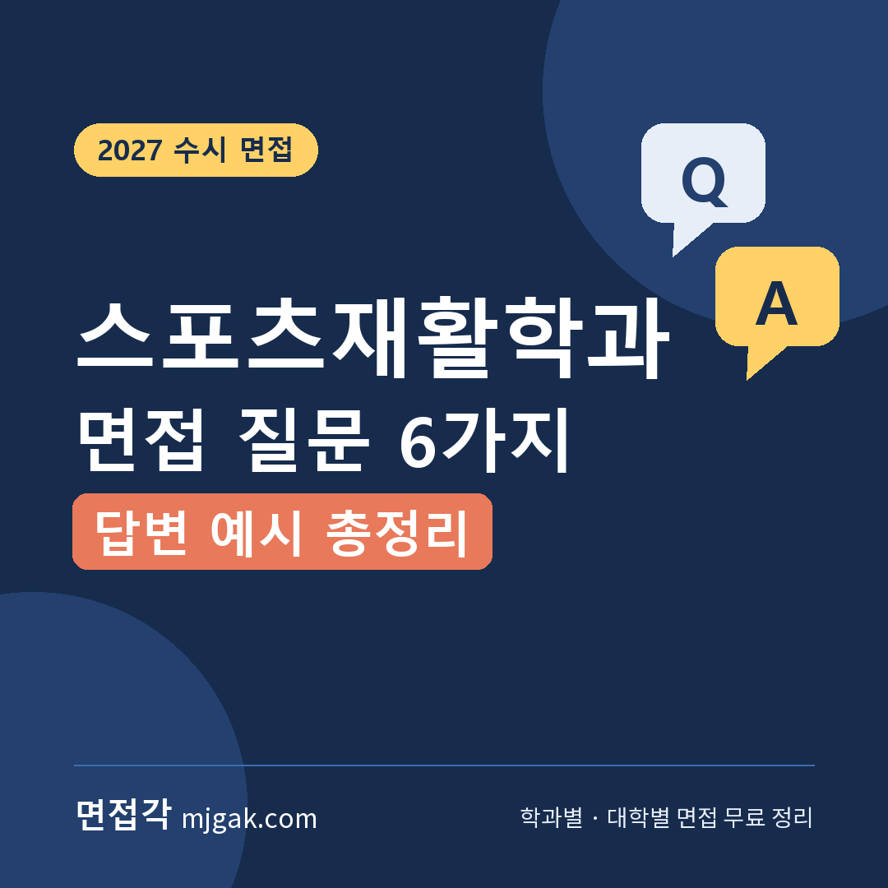
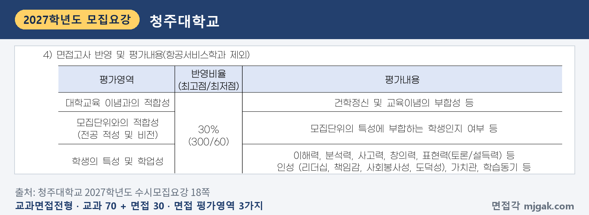
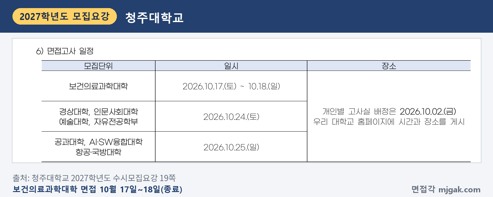
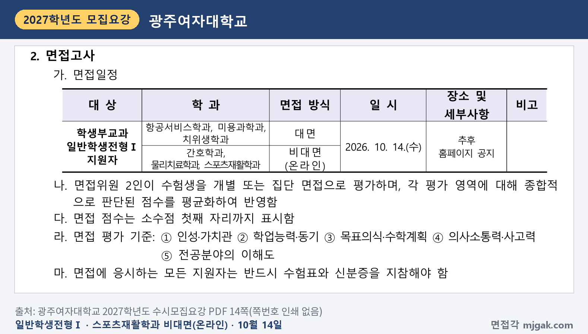
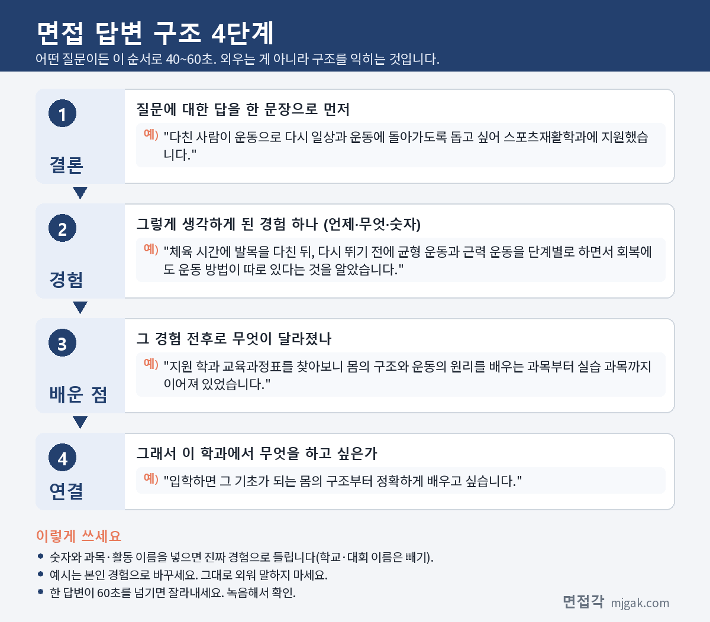

Ctrl+V (서식 유지됨)제목
본문 (이 영역 전체가 복사됩니다)
📷 여기에 이미지 넣기 — 썸네일 — thumb-sportsrehab.png (대표 이미지로 지정)
스포츠재활학과 면접을 준비하며 먼저 확인할 사실은 '스포츠재활'이라는 이름의 국가자격이 따로 없다는 점입니다. 국민체육진흥법이 정한 체육지도자 국가자격은 스포츠지도사, 건강운동관리사, 장애인스포츠지도사, 유소년스포츠지도사, 노인스포츠지도사이고, 그중 건강운동관리사는 개인의 체력적 특성에 맞는 운동 형태·강도·빈도·시간 등 운동 수행방법을 지도·관리하는 사람입니다(같은 법 시행령 제2조). 건강운동관리사가 의사·한의사의 의뢰를 받아 운동을 지도할 때도 물리요법적 재활훈련과 신체 교정운동 의뢰는 제외되고(시행령 제9조의2), '신체의 교정 및 재활을 위한 물리요법적 치료'는 의료기사 등에 관한 법률이 정한 물리치료사의 업무입니다. 이 글은 청주대·광주여대·신한대가 2027학년도 수시에서 면접을 어떻게 봤는지(세 곳 모두 2026년 10월에 끝남) 기록하고, 2028학년도에 지원할 학생을 위해 질문 6가지와 답변 예시, 답변 4단계, 시기별 준비 순서, 자주 묻는 것들을 정리했습니다.
1. 스포츠재활학과 면접, 2027학년도에는 어떻게 봤나
2027학년도 수시모집요강에서 스포츠재활 계열 모집단위의 면접을 확인한 대학은 세 곳입니다. 세 곳 모두 학생부교과 성적에 면접(29.9~40%)을 더해 한 번에 합산했고, 광주여대 스포츠재활학과는 비대면(온라인) 면접이었습니다. 신한대는 학과 이름이 스포츠의학과지만, 요강 학과소개에 "손상예방 및 재활 등과 관련된 이론과 실기/실습 교과목"을 배운다고 적혀 있어 함께 실었습니다(13쪽).
청주대학교 교과면접전형 스포츠재활학과는 5명을 뽑았습니다. 보건의료과학대학 소속이고, 요강 표의 계열 구분은 예체능입니다(5쪽). 교과 70%에 면접 30%를 합산했고, 수능 최저학력기준은 항공운항학과에만 적용돼 스포츠재활학과는 없었습니다(18쪽). 면접은 대학교육 이념과의 적합성, 모집단위와의 적합성(전공 적성 및 비전), 학생의 특성 및 학업성 세 영역을 묶어 30%(최고 300점, 최저 60점)로 반영합니다. 학생의 특성 및 학업성에는 이해력·분석력·사고력·창의력·표현력과 인성(리더십, 책임감, 사회봉사성, 도덕성)·가치관·학습동기가 들어 있습니다(18쪽). 면접 형태와 시간은 요강에 없습니다.
📷 여기에 이미지 넣기 — 캡처 1 — 청주대학교 2027학년도 수시모집요강 18쪽: cheongju-2027-sportsrehab-interview.png
보건의료과학대학 면접은 10월 17일(토)~18일(일)이었고, 개인별 고사실(시간·장소)은 10월 2일(금) 대학 홈페이지에 게시한다고 요강에 안내돼 있었습니다. 면접고사에 응시하지 않으면 불합격 처리됩니다(19쪽).
📷 여기에 이미지 넣기 — 캡처 2 — 청주대학교 2027학년도 수시모집요강 19쪽: cheongju-2027-sportsrehab-schedule.png
광주여자대학교 학생부교과 일반학생전형Ⅰ 스포츠재활학과는 17명이었습니다(PDF 3쪽). 학생부 70.1%(315점)에 면접 29.9%(135점)를 더해 450점 만점으로 합산하고, 면접 배점은 5개 영역 135~115점이며 수능 최저는 해당이 없습니다(PDF 5쪽). 면접은 10월 14일(수) 비대면(온라인)으로 치렀고, 장소와 세부사항은 입학 홈페이지에 추후 공지한다고 요강에 안내돼 있었습니다(PDF 4·14쪽). 면접위원 2인이 개별 또는 집단 면접으로 평가하고, 평가 기준은 ① 인성·가치관 ② 학업능력·동기 ③ 목표의식·수학계획 ④ 의사소통력·사고력 ⑤ 전공분야의 이해도입니다(PDF 14쪽).
📷 여기에 이미지 넣기 — 캡처 3 — 광주여자대학교 2027학년도 수시모집요강 PDF 14쪽(쪽번호 인쇄 없음): kwu-2027-sportsrehab-interview.png
신한대학교 학생부교과 일반전형 스포츠의학과(태권도·체육대학)는 21명을 뽑았습니다(22쪽). 교과 60%에 면접 40%이고 수능 최저는 없습니다(23·24쪽). 면접은 3분 내외의 개별 구술면접으로, 면접위원 2인이 수험생 1인을 평가합니다. '지원동기(지원동기, 포부 등)'와 '논리적 사고력 및 인성(전공 계열별 관련 논리적 사고력, 가치관, 성품, 협동성 등 기본소양)'에서 한 문제씩 나오고, 인성 문제는 입학홈페이지에 미리 공지한다고 적혀 있습니다(24쪽). 블라인드 면접이었고(71쪽), 면접일은 10월 3일(토)~4일(일), 10월 10일(토)~11일(일) 중 모집단위별로 잡혔습니다(18쪽).
세 대학을 나란히 놓으면 방향이 보입니다. 세 곳 모두 학생부 성적이 60~70.1%를 차지하고 면접이 나머지를 채우는 일괄합산이라, 평가 항목에는 전공에 대한 적합성·이해와 인성, 사고력이 공통으로 들어 있습니다(18·PDF 14·24쪽). 광주여대는 비대면이라 화면 앞에서 말하는 연습이, 신한대는 3분 안에 두 문제를 답하는 연습이 따로 필요합니다. 참고로 청주대 스포츠재활학과의 일반·교과인재·미래인재·지역인재전형은 학생부교과 100%였고(5·15·16·17·20쪽), 광주여대 일반학생전형Ⅱ(5명)도 학생부 100%(PDF 3·6쪽), 신한대 스포츠의학과 학생부우수자전형(5명)도 교과 100%였습니다(16·26·27쪽). 2028학년도 방식과 날짜는 새 모집요강이 나오면 꼭 다시 확인하세요.
2. 스포츠재활학과 면접 질문 6가지와 답변 예시
예시 답변은 답변 구조를 보여 주기 위한 가상의 예시입니다. 그대로 외우지 말고 본인 경험으로 바꿔 쓰세요. 공통 원칙은 하나입니다. "운동으로 체력과 기능 회복을 돕는 사람으로 말하되, 치료는 의료진과 물리치료사의 몫이라는 법의 경계를 지키고, 국가자격과 민간자격을 구분해 말한다."
▶ 질문 1. 스포츠재활학과를 지원한 이유는 무엇인가요? 이 학과에서 무엇을 배운다고 알고 있나요?
왜 묻나: 지원 이유와 학과에서 배우는 내용을 얼마나 확인했는지 함께 묻습니다. 광주여대 평가 기준의 '전공분야의 이해도', 청주대의 '모집단위와의 적합성(전공 적성 및 비전)', 신한대의 '지원동기(지원동기, 포부 등)'에 해당합니다.
답변 구조: 계기가 된 구체적 경험 → 지원 학과 교육과정에서 직접 확인한 것 → 가장 관심 있는 분야 → 입학 후 배우고 싶은 것.
답변 예시:
"체육 시간에 발목을 다쳐 한동안 운동을 쉬었는데, 다시 뛰기 전에 균형을 잡는 운동과 근력 운동을 단계별로 하면서 회복에도 운동 방법이 따로 있다는 것을 처음 알았습니다. 그 뒤 지원 학과의 교육과정표를 찾아보며 몸의 구조와 운동의 원리를 배우는 과목부터 실습 과목까지 이어진다는 것을 확인했습니다. 저는 다친 뒤 다시 운동으로 돌아가는 과정에 가장 관심이 있고, 입학하면 그 기초가 되는 몸의 구조부터 정확하게 배우고 싶습니다."
주의: 학과 이름만 보고 짐작한 내용은 빼고, 지원 대학 교육과정표에서 확인한 것만 말하세요. '부상을 치료한다'처럼 의료 행위를 맡는 듯한 표현은 쓰지 않습니다.
▶ 질문 2. 스포츠재활 전문가와 물리치료사는 어떻게 다르다고 생각하나요?
왜 묻나: 직업과 자격의 경계를 정확히 아는지 묻는 질문입니다. 광주여대의 '전공분야의 이해도', 청주대의 '학생의 특성 및 학업성(이해력, 분석력 등)'과 이어집니다.
답변 구조: 물리치료사의 법적 업무와 면허 → '스포츠재활'은 국가자격 이름이 아니라는 점 → 운동 지도 관련 국가자격(건강운동관리사 등)과 그 범위 → 그래서 내가 맡고 싶은 역할.
답변 예시:
"의료기사 등에 관한 법률은 물리치료사의 업무를 신체의 교정 및 재활을 위한 물리요법적 치료로 정하고, 물리치료사는 국가시험에 합격해 면허를 받아야 합니다. 반면 '스포츠재활'이라는 이름의 국가자격은 없고, 운동 지도와 관련된 국가자격으로는 국민체육진흥법의 건강운동관리사나 스포츠지도사가 있었습니다. 건강운동관리사는 의사의 의뢰를 받아 운동을 지도할 때도 물리요법적 재활훈련은 의뢰 대상에서 빠진다고 시행령에 적혀 있었습니다. 그래서 치료가 필요한 부분은 의료진에게 맡기고, 운동으로 체력과 기능을 되찾도록 돕는 것이 제 역할이라고 생각합니다."
주의: 두 직업을 높고 낮음으로 비교하지 마세요. 법에 적힌 업무 범위의 차이만 말하면 됩니다.
📷 여기에 이미지 넣기 — 이미지 1 — 제미나이 생성: 밝은 운동재활 실습실에서 밸런스 보드·탄력 밴드·폼롤러 옆에서 답하는 여학생(실사) / "제미나이 프롬프트 1"
(AI로 만든 이미지로, 실제와 다를 수 있습니다)
▶ 질문 3. 무릎이 아프다는 회원이 '운동하면 낫겠죠?'라며 강도 높은 운동을 원한다면 어떻게 하겠습니까?
왜 묻나: 판단력과 소통 태도를 묻는 상황 질문입니다. 광주여대는 '의사소통력·사고력', 청주대는 '이해력, 분석력, 사고력', 신한대는 '논리적 사고력 및 인성'을 평가 항목으로 적었습니다.
답변 구조: 언제부터 어떤 동작에서 아픈지 묻는다 → 통증이 계속되면 운동보다 진료를 먼저 권한다 → 진료 뒤 허용된 범위 안에서 낮은 강도부터 계획한다 → 회원의 목표는 존중한다.
답변 예시:
"먼저 언제부터, 어떤 동작을 할 때 아픈지 여쭤보겠습니다. 통증이 계속되거나 붓기가 있다면 운동보다 병원 진료를 먼저 받아 보시라고 권하겠습니다. 진료 뒤 운동을 해도 된다고 하면, 그 범위 안에서 낮은 강도부터 시작해 조금씩 올리는 계획을 회원과 함께 세우겠습니다. 빨리 좋아지고 싶은 마음은 존중하되, 통증을 참고 하는 운동은 권하지 않겠습니다."
주의: '원하시는 대로 해 드린다'나 '제가 상태를 판단해 드린다'로 끝내면 역할의 경계가 흐려집니다. 묻기 → 진료 권유 → 범위 안의 계획 순서를 지키세요.
▶ 질문 4. 고등학교에서 배운 과목 중 이 학과 공부와 가장 관련 있다고 생각하는 과목은 무엇인가요?
왜 묻나: 학업 동기와 준비 정도를 묻습니다. 광주여대는 '학업능력·동기', 청주대는 '학생의 특성 및 학업성(학습동기 등)'을 평가 영역에 두었습니다.
답변 구조: 과목 이름 → 그 과목에서 배운 개념 하나(정확히 아는 만큼) → 그 개념을 내 경험과 연결해 본 일 → 학과 공부와의 연결.
답변 예시:
"생명과학이라고 생각합니다. 근육이 수축하고 이완하는 원리를 배우면서, 체육 시간에 같은 동작을 반복하면 왜 다음 날 특정 부위가 뻐근한지 처음으로 이해했습니다. 그 뒤 체력 측정 결과를 학기마다 적어 두고 어떤 운동을 했을 때 기록이 달라졌는지 비교해 보았습니다. 대학에서는 이런 원리를 더 깊이 배워 운동 방법을 근거 있게 설명할 수 있는 사람이 되고 싶습니다."
주의: 개념은 내가 설명할 수 있는 만큼만 꺼내세요. 학교 밖 대회 수상, 자격증 이름, 특정 기관명 언급에 불이익을 둔 대학이 있으니(예: 한림대 2027학년도 요강 91·92쪽) 수업과 교내 활동에서 한 일로 답을 채우세요.
▶ 질문 5. 다른 사람을 도와 함께 목표를 이룬 경험이 있나요?
왜 묻나: 인성과 협동성을 묻는 경험 질문입니다. 청주대는 '인성(리더십, 책임감, 사회봉사성, 도덕성)', 광주여대는 '인성·가치관', 신한대는 '협동성'을 평가 항목에 넣었습니다.
답변 구조: 상황과 목표 → 알게 된 다른 사람의 어려움 → 내가 한 구체적인 행동 → 결과 → 배운 점.
답변 예시:
"체육 시간 단체 줄넘기 수행평가에서 한 친구가 박자를 자꾸 놓쳐 모둠 기록이 오르지 않았습니다. 저는 쉬는 시간에 그 친구와 줄 없이 박자에 맞춰 뛰는 연습부터 같이 했고, 모둠에서는 친구가 박자를 잡기 쉬운 자리로 순서를 바꾸자고 제안했습니다. 일주일 뒤 모둠 기록이 처음보다 많이 늘었고, 친구도 자신감을 얻었습니다. 잘 못하는 사람을 탓하기보다 방법을 바꿔 함께 가는 것이 중요하다는 것을 배웠습니다."
주의: 모둠이 잘한 결과보다 내가 한 행동 하나가 먼저 들리게 말하세요.
▶ 질문 6. 졸업 후 어떤 일을 하고 싶나요? 그러려면 무엇을 준비해야 하나요?
왜 묻나: 진로 계획과 자격 체계를 알고 지원했는지 묻습니다. 광주여대의 '목표의식·수학계획', 청주대의 '전공 적성 및 비전', 신한대의 '포부'와 이어집니다.
답변 구조: 하고 싶은 일 → 그 일과 관련된 자격이 국가자격인지 민간자격인지 → 국가자격이라면 법에 적힌 취득 요건 → 대학에서 준비할 것.
답변 예시:
"졸업 후에는 운동을 다시 시작하려는 사람들이 안전하게 체력을 되찾도록 돕는 일을 하고 싶습니다. 찾아보니 '스포츠재활'이라는 이름의 국가자격은 없고, 국가자격 중에서는 국민체육진흥법의 건강운동관리사가 제가 하고 싶은 일과 가장 가까웠습니다. 건강운동관리사는 대학에서 체육 분야 학문을 전공하고 졸업했거나 졸업 예정인 사람이 자격검정에 합격하고 연수과정을 이수해야 한다고 시행령에 적혀 있었습니다. 대학에서는 그 바탕이 되는 과목을 꾸준히 공부하고, 학과에서 안내하는 자격이 국가자격인지 민간자격인지 먼저 확인하겠습니다."
주의: 학과에서 딸 수 있는 자격을 모두 국가자격처럼 말하지 마세요. 확인하지 않은 취업률이나 전망 대신 내가 하고 싶은 일과 준비 계획을 말하세요.
3. 답변은 이 4단계로 만드세요
어떤 질문이든 결론 → 경험 → 배운 점 → 연결, 이 순서로 40~60초 안에 말하면 됩니다. 아래 도식은 질문 1의 답을 네 문장으로 나눈 것입니다.
📷 여기에 이미지 넣기 — 도식 — structure-sportsrehab.png
4. 2028학년도 스포츠재활학과 면접 준비 순서
고2 겨울방학: 자격 체계를 한 장으로 정리합니다. '스포츠재활' 국가자격은 없다는 점, 체육지도자 국가자격 다섯 가지, 건강운동관리사의 정의와 의뢰 범위, 물리치료사의 법적 업무를 적고 질문 2·6 초안을 씁니다.
고3 1학기: 생명과학·체육 등 관련 과목에서 배운 개념 하나씩을 골라, 내 경험과 연결해 설명하는 문장을 만들어 둡니다(질문 4).
2028학년도 수시모집요강이 나오면: 스포츠재활 계열 모집단위의 전형마다 면접이 있는지부터 봅니다. 2027학년도에는 세 대학 모두 면접 없는 교과 100% 전형도 함께 있었습니다. 면접 전형이면 대면·비대면, 개별·집단, 시간, 비중, 평가 영역, 날짜, 복장·블라인드 규정을 표로 정리합니다.
면접 2주 전부터의 연습 순서입니다.
1~2일차: 정리한 표를 다시 보고, 미리 공지된 인성 문제나 비대면 접속 안내가 있으면 그것부터 확인합니다.
3~4일차: 지원 동기(질문 1)와 진로·자격(질문 6)을 내 경험으로 마무리합니다. 국가자격과 민간자격 구분, 건강운동관리사의 법적 요건을 정확히 넣고 40~60초로 맞춥니다.
5~6일차: 물리치료사와의 차이(질문 2)를 준비합니다. 물리치료사의 법적 업무와, 건강운동관리사가 의사 의뢰를 받을 때도 물리요법적 재활훈련은 제외된다는 점을 외웁니다.
7~8일차: 관련 과목 개념 설명(질문 4)을 소리 내어 연습합니다. 정확히 설명할 수 있는 개념만 남깁니다.
9~10일차: 상황 질문(질문 3)과 경험 질문(질문 5)을 장면을 바꿔 가며 말해 봅니다. 허리가 아픈 회원, 운동을 자꾸 빠지는 회원, 팀원이 연습을 포기하려는 경우처럼요.
11~12일차: 실제 시간에 맞춰 모의 면접을 합니다. 두 문제를 3분 안에 답하는 형식이면 한 답을 40초 이내로 다듬고, 비대면이면 화면 앞에서 녹화한 영상을 다시 보며 확인되지 않은 내용을 덜어 냅니다.
전날: 새 답을 만들기보다 정리한 답을 한 번씩 훑습니다. 수험표·신분증과 요강의 면접 유의사항을 확인하고 일찍 쉽니다.
5. 2027학년도 스포츠재활학과 면접은 언제 봤나
2026년에 치러진 일정을 날짜순으로 적으면 이렇습니다. 모두 끝났습니다.
- 10월 2일(금): 청주대 교과면접전형 개인별 고사실(시간·장소) 홈페이지 게시(19쪽)
- 10월 3일(토)~4일(일), 10일(토)~11일(일) 중 모집단위별: 신한대 일반전형(스포츠의학과) 면접(18쪽)
- 10월 14일(수): 광주여대 일반학생전형Ⅰ 면접, 스포츠재활학과는 비대면(PDF 4·14쪽)
- 10월 17일(토)~18일(일): 청주대 교과면접전형 보건의료과학대학 면접(19쪽)
2027학년도에는 세 대학 면접이 모두 수능(11월 19일) 전인 10월에 몰려 있었습니다. 2028학년도에 같은 시기라면 원서 접수 전에 여섯 질문의 초안을 마쳐 두세요. 날짜는 2028학년도 모집요강으로 확인합니다.
6. 스포츠재활학과 면접 자주 묻는 것들
Q. 스포츠재활학과를 졸업하면 받는 국가자격이 있나요?
A. '스포츠재활'이라는 이름의 국가자격은 없습니다. 국민체육진흥법 제2조가 정한 체육지도자 국가자격은 스포츠지도사, 건강운동관리사, 장애인스포츠지도사, 유소년스포츠지도사, 노인스포츠지도사이고, 문화체육관광부장관이 자격검정에 합격하고 연수과정을 이수한 사람에게 자격증을 발급합니다(제11조). 졸업만으로 자동으로 받는 국가자격은 아닙니다.
Q. 건강운동관리사는 어떤 자격인가요?
A. 국민체육진흥법 시행령 제2조는 건강운동관리사를 개인의 체력적 특성에 적합한 운동 형태, 강도, 빈도 및 시간 등 운동 수행방법에 대해 지도·관리하는 사람으로 정합니다. 대학에서 체육 분야 학문을 전공하고 졸업한 사람(졸업 예정자 포함) 등이 자격검정에 합격하고 연수과정을 이수해야 하며, 의사·한의사의 의뢰를 받아 운동을 지도할 때 물리요법적 재활훈련과 신체 교정운동 의뢰는 제외됩니다(시행령 제9조의2).
Q. 스포츠재활학과를 나오면 물리치료사가 될 수 있나요?
A. 물리치료사는 의료기사 등에 관한 법률에 따른 면허입니다. 같은 법 제4조는 대학 등에서 취득하려는 면허에 상응하는 보건의료 학문을 전공하고 보건복지부령으로 정하는 현장실습과목을 이수해 졸업한 뒤 국가시험에 합격하도록 정합니다. 물리치료사가 목표라면 물리치료학과의 응시 요건을 따로 확인하세요.
Q. 수능 최저가 있나요?
A. 2027학년도 청주대 교과면접전형, 광주여대 일반학생전형Ⅰ, 신한대 일반전형은 수능 최저가 없었습니다(18쪽·PDF 5쪽·24쪽). 2028학년도 요강에서 지원 전형별로 다시 확인하세요.
Q. 면접 복장 규정이 있나요?
A. 신한대 모집요강은 면접고사 유의사항에 "수험생의 본분에 맞는 단정한 복장 착용을 권장합니다"라고 적고, 수험생이 성명·출신고교명 등 개인정보를 언급하지 않도록 정했습니다(71쪽). 청주대와 광주여대 모집요강의 면접 안내에는 복장 규정이 따로 없습니다(청주대 '소속이 표기된 복장 착용 금지'는 생활체육학과 실기고사 안내, 23쪽).
7. 면접 전날 체크리스트
□ 지원 동기를 "경험 → 교육과정에서 확인한 것 → 관심 분야"로 60초 안에 말할 수 있다
□ '스포츠재활'은 국가자격 이름이 아니라는 점과 체육지도자 국가자격의 종류를 말할 수 있다
□ 물리치료사의 법적 업무와 건강운동관리사의 범위 차이를 말할 수 있다
□ 아픈 회원 상황에 "묻기 → 진료 권유 → 범위 안의 계획" 순서로 답할 수 있다
□ 관련 과목에서 배운 개념 하나를 내 경험과 연결해 정확히 설명할 수 있다
□ 이름·출신고교명 같은 개인정보가 답변에 나오지 않는다
□ 지원 대학 면접 형식(대면·비대면, 시간, 비중, 평가 영역)과 날짜를 확인하고 수험표·신분증을 챙겼다
8. 함께 보면 좋은 글
스포츠재활학과 면접은 운동 지식을 늘어놓기보다, 치료와 운동 지도의 경계를 지키며 다친 사람이 다시 움직이도록 곁에서 돕는 사람인지를 내 경험으로 설명하는 자리입니다.
※ 이 글의 모집요강 내용은 청주대학교, 광주여자대학교, 신한대학교 2027학년도 수시모집요강에서 인용했습니다. 괄호 안 쪽수는 각 모집요강에 인쇄된 쪽수이고, 쪽번호가 없는 광주여대는 PDF 쪽수로 적었습니다. 질문 6가지는 평가 항목을 바탕으로 정리한 예상 질문이며 대학이 공개한 질문이 아닙니다. 2028학년도 면접 방식과 일정은 바뀔 수 있으니 지원 대학 입학처 공지로 확인하세요.
면접각은 스포츠재활학과를 포함한 학과별 면접 질문·답변 예시와 대학별 2027학년도 면접 정보, 대학이 공개한 면접 기출을 무료로 모아 둔 사이트입니다. 가입 없이 볼 수 있고, 무작위로 뽑은 질문에 60초 타이머로 답해 보는 모의 면접도 있습니다.
태그 (#은 에디터가 자동으로 붙이므로 그대로 붙여 넣어도 됩니다)
넣을 이미지 목록 (docs/promo/img 폴더)





제미나이 프롬프트 1 — 밝은 운동재활 실습실에서 밸런스 보드·탄력 밴드·폼롤러 옆에서 답하는 여학생(실사) (4:3) — 제미나이에 그대로 붙여 넣어 이미지를 만드세요